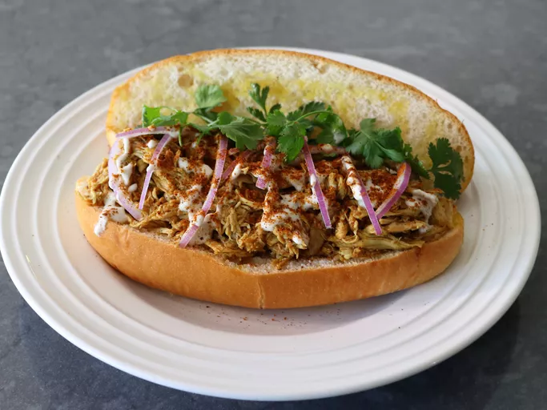

Home
Pulled Chicken Shawarma Sandwich

Description
This pulled chicken shawarma sandwich has the same fab texture as pulled pork, and the extremely delicious shawarma spice mix plus a rich, reduced, seasoned broth make it nothing short of amazing. Serve on toasted sandwich rolls, with thinly sliced red onions, fresh cilantro, tahini or a yogurt sauce, and maybe a squeeze more fresh lemon juice.
Ingredients
Shawarma Spice Mix
- 2 teaspoons kosher salt
- 2 tablespoons ground cumin
- 1 tablespoon sumac
- 2 teaspoons smoked paprika
- 2 teaspoons chili powder
- 1 teaspoon ground black pepper
- 1 teaspoon garlic powder
- 1 teaspoon ground turmeric
- 1/4 teaspoon ground cloves
- 1/4 teaspoon cayenne pepper
- 1 teaspoon ground cinnamon
Pulled Chicken
- 1 (4 to 5 pound) whole chicken
- 1 quart water
- 4 cloves garlic, sliced
- 1 onion, sliced
- kosher salt to taste
- 1/2 lemon, juiced
Steps
- For shawarma spice mix, add salt, cumin, sumac, paprika, chili powder, black pepper, garlic powder, turmeric, cloves, cayenne, and cinnamon to a small bowl and stir together.
- Place chicken in a soup pot, breast side up, and add 1 quart cold water along with garlic, onions, and half the spice mix.
- Place pot over high heat and bring to boil. Reduce heat to low, cover, and simmer gently for 1 hour, turning chicken over every 20 minutes.
- Carefully remove chicken to a bowl, and let cool until it is cold enough to handle, about 30 minutes.
- Remove cooked chicken meat from the carcass, transfer meat into a bowl, cover, and refrigerate until needed.
- Transfer all bones and scraps back into the pot. Rinse the bowl with about 1½ cups cold fresh water, and add to the pot. Bring to simmer over high heat. Reduce heat to low and simmer gently for at least 1 hour, preferably 2 hours.
- Strain broth, and transfer broth back into the pot. Bring to boil over high heat, and cook until liquid is reduced by half, 10 to 15 minutes.
- Shred chicken into about ½ inch thick strips and stir it into the pot. Reduce heat to medium, and cook chicken, stirring often, until chicken starts to break apart and absorb the sauce, 10 to 15 minutes. Reduce heat to low.
- Taste for seasoning, and add more salt if needed. Season with additional shawarma spice mix to taste. Finish by stirring in lemon juice.